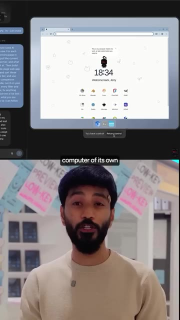
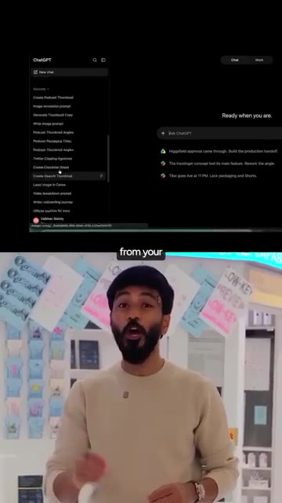
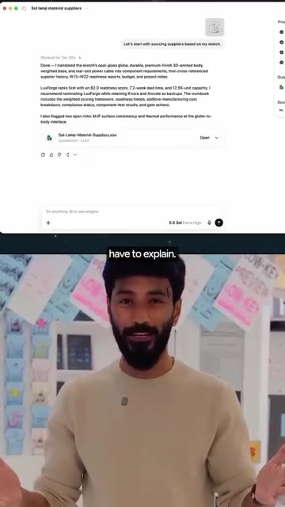
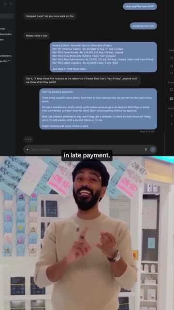
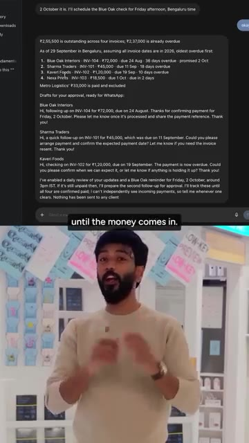
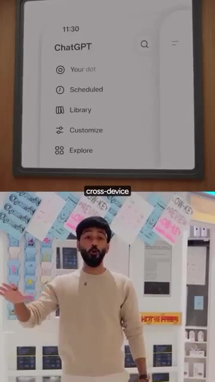
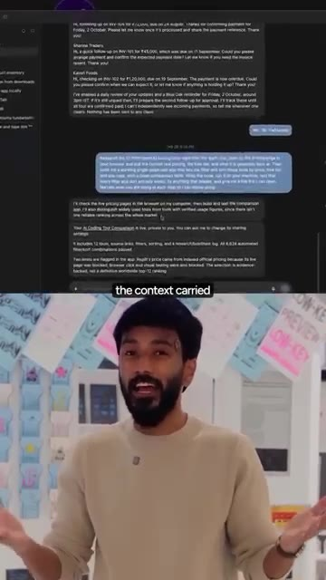
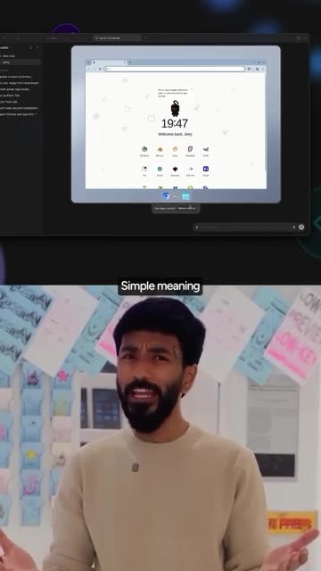
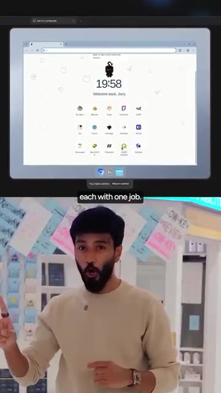
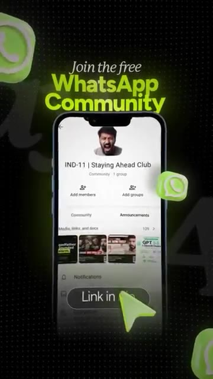

Nous sommes au bureau d'OpenAI en ce moment même parce que j'ai été invité à voir ceci. Je suis tellement excité. Ce n'est plus un secret. Je peux tout raconter à ce sujet. Ça s'appelle Dots et c'est l'assistant le plus puissant jamais créé. Voici huit choses qui le font se démarquer. Numéro un, il ne s'éteint jamais. Les Dots sont des agents toujours actifs. Ce qui signifie simplement qu'il continue de travailler même après que vous ayez fermé l'application.
Interface & Outils : AUCUNE
Contenu textuel & Code : Sous-titres textuels et mention "#01 It never switches off."
Action / Démonstration : Le présentateur s'adresse directement à la caméra pour introduire le premier point de la liste.
Vous obtenez votre propre point et vous lui donnez un nom. Numéro deux, il fonctionne sur GPT-6 Astra. C'est le modèle de pointe d'OpenAI. Le même qu'ils ont lancé avec ces mots : bienvenue dans l'ère de l'AGI. Donc oui, il peut gérer les choses difficiles. Numéro trois, il a son propre ordinateur et il peut aussi utiliser le vôtre. C'est ce qu'on appelle l'exécution locale. En clair, votre point obtient son propre ordinateur cloud avec un navigateur, du travail ChatGPT et des codecs pour faire des recherches, analyser des données, et créer et tester des logiciels.
Interface & Outils : Interface de bureau virtuel et interface de chat IA (GPT-6 / Astra).
Contenu textuel & Code : Texte du prompt dans le chat et affichage d'un environnement de bureau virtuel ("Welcome back, Jerry").
Action / Démonstration : Démonstration de l'ordinateur virtuel attribué à l'intelligence artificielle.

🔍 AgrandirEt quand il a besoin de vos fichiers, vous connectez votre ordinateur portable et ça fonctionne directement là. Numéro quatre, il apprend comment vous travaillez. C'est ce qu'on appelle la mémoire persistante. En clair, il apprend vos priorités et vos standards à partir de votre mémoire ChatGPT et des applications que vous connectez. Donc plus vous travaillez ensemble, moins vous avez à expliquer. Numéro cinq, il prend des responsabilités, pas des prompts. C'est ce qu'on appelle une tâche de longue durée.
Interface & Outils : ChatGPT, interface web de chatbot IA, tableur Excel.
Contenu textuel & Code : Historique de chats, prompts de recherche de fournisseurs, résultats d'analyse avec scores et recommandations, fichiers joints.
Action / Démonstration : Démonstration de l'utilisation de ChatGPT pour analyser des données et gérer des processus de fabrication.

🔍 Agrandir
🔍 AgrandirEn clair, vous lui donnez un travail, pas une question. Les petites entreprises indiennes ont 8,1 lakh crore de roupies bloquées dans les retards de paiement. Dites donc à votre dot : gère mes paiements en attente. Elle suit chaque facture impayée, rédige des relances pour votre approbation et continue de vérifier jusqu'à ce que l'argent rentre. Le client dit vendredi prochain, elle revérifie vendredi. Numéro six, accédez-y de n'importe où. C'est ce qu'on appelle la continuité multi-appareils. En clair, une seule dot, une seule conversation sur votre ordinateur, votre téléphone ou le web.
Interface & Outils : Interface de chat textuel et menu d'application mobile/web (ChatGPT).
Contenu textuel & Code : Liste de factures (INV-101 à INV-105) avec montants en roupies indiennes (Rs), statuts de paiement, et messages de relance rédigés automatiquement.
Action / Démonstration : Démonstration de l'automatisation du suivi des factures impayées et de la génération de messages de relance via une IA conversationnelle.

🔍 Agrandir
🔍 Agrandir
🔍 AgrandirEnvoyez-lui un message ou appelez-le simplement. Et les SMS, Slack, Teams et les e-mails arrivent avec le contexte transmis à tout le monde. Numéro sept, vous gardez le contrôle. C'est ce qu'on appelle l'humain dans la boucle. Ce qui signifie simplement qu'il demande avant toute chose importante. Avec des règles personnalisées, vous décidez de ce qu'il fait seul et de ce qui nécessite votre approbation. Et la vue des activités montre tout ce qu'il a fait. Et numéro huit, des points de spécialistes.
Interface & Outils : Interface de chat textuel et navigateur web sur bureau virtuel.
Contenu textuel & Code : Historique de messages textuels professionnels et interface de bureau avec horloge et icônes d'applications.
Action / Démonstration : Présentation des fonctionnalités de communication et d'automatisation avec un assistant IA.

🔍 Agrandir
🔍 AgrandirC'est ce qu'on appelle un système multi-agents, un système de 80 agents. En clair, une équipe d'agents, chacun ayant un seul travail. Vous commencez par un point personnel. Viennent ensuite les points spécialisés, chacun s'occupant d'une partie de votre travail. Un point aujourd'hui, toute une équipe de points demain. C'est à cela que ressemble réellement l'ère de l'AGI. Les points sont déployés sur ChatGPT Pro et Business Premium, et pendant le premier mois, cela ne sera pas décompté des limites de votre forfait.
Interface & Outils : Bureau virtuel / Interface SaaS (« Jerry's computer ») avec icônes d'applications.
Contenu textuel & Code : Écran affichant un bureau virtuel avec l'heure (19:58) et des applications variées.
Action / Démonstration : Le présentateur explique le fonctionnement du système multi-agents tout en illustrant l'environnement virtuel à l'écran.

🔍 AgrandirJe partage les 10 meilleurs cas d'utilisation de Dots dans ma communauté WhatsApp gratuite. Lien dans la bio.
Interface & Outils : Application mobile WhatsApp (Interface de communauté).
Contenu textuel & Code : Texte "Join the free WhatsApp Community", nom de la communauté "IND-11 | Staying Ahead Club", et bouton "Link in bio".
Action / Démonstration : Promotion visuelle de la communauté WhatsApp gratuite avec un appel à l'action invitant à rejoindre le groupe via le lien en bio.

🔍 Agrandir